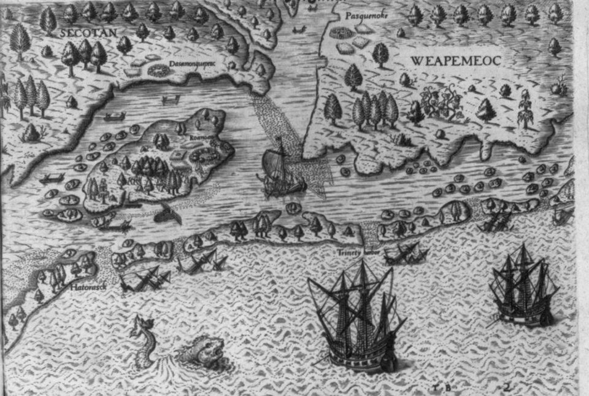
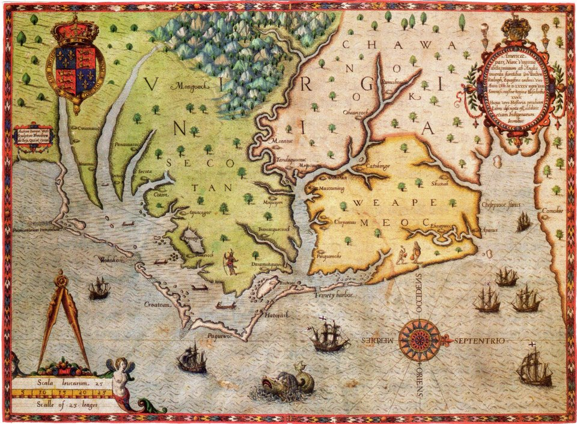
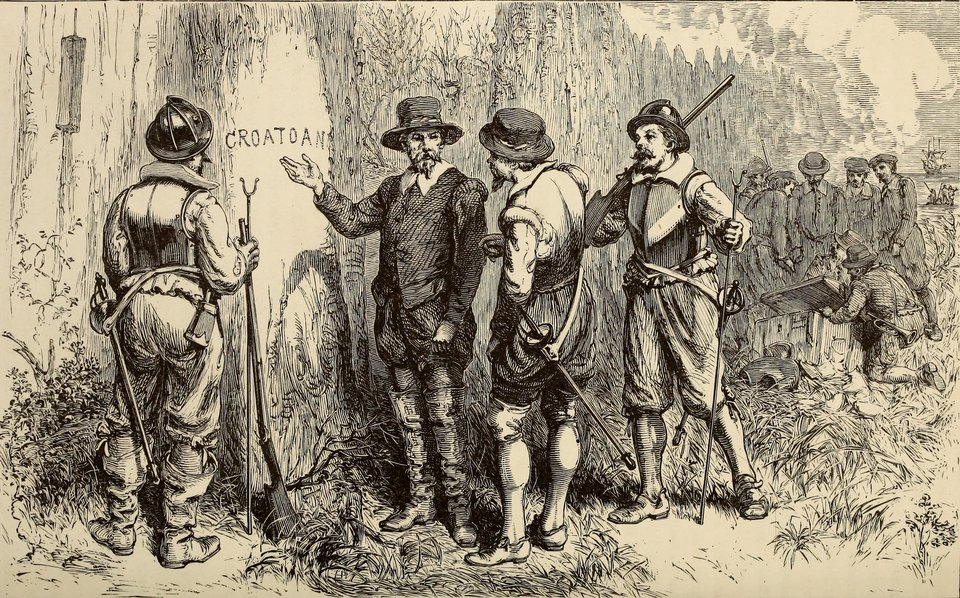
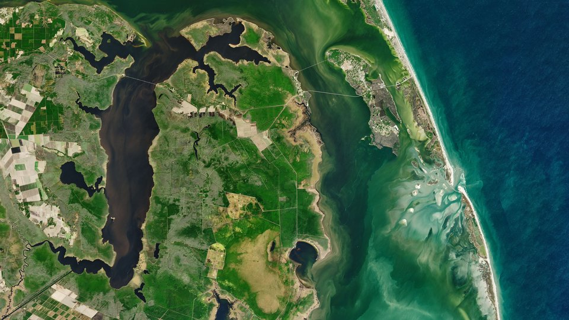
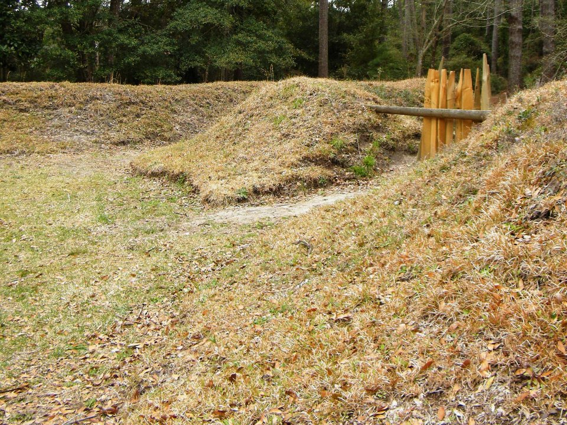

A colônia perdida de Roanoke — uma palavra entalhada num poste
Em agosto de 1587, o governador John White deixou mais de cem colonos numa ilha da costa da Carolina do Norte, entre eles a filha e a neta recém-nascida, e foi à Inglaterra buscar suprimentos. Voltou três anos depois. Encontrou as casas desmontadas, os baús revirados e uma única palavra entalhada num poste. A palavra dizia para onde eles tinham ido. Ninguém foi lá conferir a tempo.
- Onde
- Ilha de Roanoke, Carolina do Norte
- Fundada
- julho de 1587
- Achada vazia
- 18 de agosto de 1590
- Colonos
- contagens divergem: ≈ 110 a 119
- Deixado para trás
- CROATOAN, num poste; CRO, numa árvore
- Destino dos colonos
- não comprovado
A ilha de Roanoke tem uns quinze quilômetros de comprimento e fica escondida atrás do cordão de areia dos Outer Banks, entre o continente e o mar aberto. É um lugar abrigado e difícil de alcançar: as barras de areia que a protegem dos navios espanhóis também impedem que um navio inglês de bom calado chegue perto. Essa contradição — porto seguro para se esconder, porto ruim para ser abastecido — atravessa a história inteira da colônia.
O que se sabe de Roanoke vem quase todo de um punhado de relatos impressos por Richard Hakluyt no fim do século XVI, escritos pelos próprios participantes, e dos desenhos e mapas de John White, que esteve em três das viagens. Não há registro do lado indígena, a não ser o que os ingleses anotaram dele. Este dossiê separa o que esses textos afirmam do que foi deduzido depois, e mostra onde a arqueologia de hoje discorda de si mesma.

01Três viagens antes da colônia perdida
Em 1584, a rainha Elizabeth I deu a Walter Raleigh uma carta-patente para estabelecer colônias em terras que nenhum príncipe cristão ocupasse. No mesmo ano, Raleigh mandou uma expedição de reconhecimento, comandada por Philip Amadas e Arthur Barlowe, com o piloto português Simon Fernandes. Ela chegou à região em julho, foi bem recebida pelos algonquinos de Roanoke e voltou no outono levando dois homens da terra: Manteo, da ilha de Croatoan, e Wanchese, de Roanoke. A região ganhou o nome de Virgínia, em homenagem à rainha.
Em 1585 veio a segunda viagem, militar: sob o comando de Richard Grenville, cerca de cento e oito homens, governados por Ralph Lane, ficaram na ilha. Entre eles estavam o matemático Thomas Hariot e o próprio John White, encarregado de desenhar a gente, os bichos e as plantas. A convivência com os vizinhos azedou rápido — os ingleses dependiam do milho dos algonquinos num ano ruim, e respondiam com ameaça. Em 1º de junho de 1586, Lane atacou a aldeia de Dasamonquepeuc e matou o chefe Wingina, que então usava o nome de Pemisapan. Semanas depois, Francis Drake passou pela costa, e os colonos, desmoralizados, voltaram com ele para a Inglaterra.
O navio de suprimentos de Grenville chegou logo em seguida e encontrou o forte vazio. Para não perder a posse, Grenville deixou quinze homens na ilha. Eles também desapareceram — e é aqui que começa o padrão.

02A colônia de 1587 e Virginia Dare
A terceira viagem era diferente das anteriores. Não levava soldados, e sim famílias: homens, mulheres e crianças que receberiam terra, sob uma companhia chamada "Cidade de Raleigh". John White ia como governador. O destino não era Roanoke, mas a baía de Chesapeake, mais ao norte, onde havia porto fundo. A ideia era só passar por Roanoke para recolher os quinze homens de Grenville.
Em 22 de julho de 1587, os colonos desembarcaram na ilha e não acharam ninguém, só os ossos de um homem. Simon Fernandes, o piloto, recusou-se a seguir para Chesapeake e deixou os colonos ali. Os relatos dão a decisão como dele; por que a tomou, não se sabe.
Quantos ficaram é a primeira divergência. A lista de nomes que Hakluyt imprimiu traz 17 mulheres e 11 crianças; os homens variam entre 85 e 91, conforme se descontem os que voltaram com White e os que morreram, e há dois bebês nascidos na ilha. O total que circula, 117, é uma leitura possível dessa lista, não um número fixado na fonte. As contas vão de cerca de 110 a 119.
O mês seguinte foi tenso. Um colono, George Howe, foi morto enquanto pescava sozinho, poucos dias depois da chegada. Em agosto, os ingleses atacaram de madrugada o que achavam ser o povo responsável e atingiram, por engano, gente de Croatoan, os únicos aliados que tinham. Manteo, que estava com eles, foi batizado e recebeu um título inglês. Em 18 de agosto nasceu Virginia Dare, filha de Eleanor, a filha de White, e de Ananias Dare — a primeira criança de pais ingleses nascida nas Américas, segundo os registros ingleses. Foi batizada no domingo seguinte.
Os colonos então pediram que White voltasse à Inglaterra para apressar os suprimentos. Ele hesitou — deixaria a filha e a neta — e acabou indo, em 27 de agosto. Antes de partir, combinou um código: se os colonos saíssem da ilha, entalhariam o nome do lugar para onde fossem; se saíssem sob ameaça, acrescentariam uma cruz. White registrou ainda que eles já pensavam em mudar-se "cinquenta milhas para dentro do continente". As duas frases vão pesar em 1590 e, de novo, em 2012.
03Três anos de atraso: a guerra no caminho
White chegou à Inglaterra no fim de 1587, no pior momento possível. A Espanha preparava a Invencível Armada, e a Coroa proibiu a saída de navios capazes de combater. Em abril de 1588, White conseguiu partir com duas embarcações pequenas, o Brave e o Roe. Uma delas foi atacada e saqueada no mar, e as duas voltaram sem chegar à América. Depois da batalha contra a Armada, ainda levou dois anos para uma viagem se organizar.
Do outro lado, a Espanha procurava a colônia para destruí-la. Em 1588, uma pequena expedição saída da Flórida espanhola, sob o capitão Vicente González, percorreu a costa e relatou sinais de presença inglesa — um ancoradouro, barris enterrados na areia —, mas nenhum inglês; onde exatamente ela esteve ainda se discute. Não há registro de ataque espanhol a Roanoke.
Em 1998, uma equipe liderada pelo dendrocronologista David Stahle publicou na Science a reconstrução das chuvas da região a partir de anéis de ciprestes antigos. O resultado: 1587 foi a pior estação de crescimento em oito séculos, e a seca se estendeu até 1589. É um dado físico, não um relato. Explica a falta de comida e a pressão sobre os vizinhos que tinham milho para dividir. Não explica, sozinho, para onde os colonos foram.
04CROATOAN: o que White encontrou em 1590
White voltou com uma frota de corsários, mais interessada em caçar navios espanhóis no Caribe do que em resgatar colonos. Em meados de agosto de 1590, os navios chegaram aos Outer Banks. Viram fumaça na ilha e foram até lá. Na travessia das barras, um dos botes virou e sete homens morreram afogados, entre eles o capitão Edward Spicer.
Em 18 de agosto — o terceiro aniversário de Virginia Dare —, White entrou no assentamento. Num relato curto e seco, ele descreve o que viu: as casas tinham sido desmontadas, e no lugar delas havia uma paliçada alta de troncos, que não existia quando ele partiu. Num dos postes da entrada, em letras grandes, estava entalhada a palavra CROATOAN. Numa árvore, perto da praia, as letras CRO. Não havia cruz em nenhum dos dois. Baús que os colonos tinham enterrado foram encontrados abertos e revirados, entre eles alguns do próprio White, com desenhos e mapas estragados pela chuva.
White leu a mensagem como boa notícia: a ilha de Croatoan era a terra de Manteo, aliado dos ingleses, a cerca de oitenta quilômetros ao sul. O combinado tinha sido cumprido, e sem o sinal de perigo. Ele pretendia ir até lá no dia seguinte. Uma tempestade partiu cabos, os navios perderam âncoras, e o capitão decidiu voltar para o mar. A frota seguiu para os Açores e depois para a Inglaterra. White nunca mais voltou à América.

05O que Jamestown ouviu falar
A Inglaterra só voltou à região de verdade em 1607, com Jamestown, na baía de Chesapeake. Os colonos de lá tinham ordem de procurar os sobreviventes de Roanoke, e recolheram boatos. John Smith ouviu de chefes indígenas sobre homens vestidos como europeus em lugares chamados Ocanahonan e Pakerakanick, ao sul. Um mapa daquela época, conhecido como mapa de Zúñiga por ter sido copiado para a Espanha, anota num ponto do interior que ali estariam quatro homens vestidos "vindos de Roanoke". Expedições foram mandadas e voltaram sem achar ninguém.
A acusação mais grave veio depois. Em 1609, o Conselho da Virgínia, em Londres, passou a afirmar que os colonos de Roanoke tinham sido mortos por ordem de Wahunsenacawh, o chefe que os ingleses chamavam de Powhatan. William Strachey, por volta de 1612, repetiu a história com detalhes: o massacre teria acontecido pouco antes da chegada a Jamestown, e sete pessoas teriam escapado. Em 1625, Samuel Purchas escreveu que o próprio Powhatan teria confessado o crime a Smith.
O problema é que nada disso aparece nos escritos de Smith, que é quem teria ouvido a confissão. A versão do massacre surge justamente quando a companhia da Virgínia tinha interesse em justificar a guerra contra os Powhatan, e nenhuma escavação jamais encontrou o que ela supõe. Não é uma hipótese a descartar de vez — os rumores de Jamestown existiram —, mas é a de base documental mais frágil e mais interessada.
06A pedra de Eleanor Dare
Em 1937, um turista chamado Louis Hammond apresentou uma pedra que dizia ter achado perto do rio Chowan, na Carolina do Norte. Nela havia uma mensagem entalhada, assinada por Eleanor Dare e dirigida ao pai: os colonos teriam ido para o interior, Virginia teria morrido, e a maior parte do grupo teria sido morta. A pedra foi levada ao Brenau College, na Geórgia, cujo professor Haywood Pearce passou a pagar por novas descobertas. Elas vieram: um canteiro da Geórgia, Bill Eberhardt, e outros entregaram dezenas de pedras, contando uma saga que atravessava as Carolinas até a Geórgia.
Em 1941, uma reportagem de Boyden Sparkes na Saturday Evening Post mostrou que os achadores se conheciam e que as pedras do segundo lote eram falsificações. A primeira, de Hammond, ficou num limbo: uma análise feita em 2016 pela Brenau, com amostras testadas na Universidade da Carolina do Norte em Asheville, não chegou a conclusão. Cerca de quarenta e oito pedras continuam no acervo da hoje Brenau University. As de Eberhardt são falsificação; a de Hammond não tem autenticidade demonstrada, e a maioria dos pesquisadores a trata com desconfiança.
07Duas escavações, duas respostas
A arqueologia de Roanoke tem uma peculiaridade: os dois projetos mais ativos dizem ter encontrado os colonos, e em lugares diferentes. Os dois partem de uma das frases de White.
Hatteras: seguir a palavra
A primeira linha segue o CROATOAN ao pé da letra. Desde 2009, a Croatoan Archaeological Society, fundada pelo historiador Scott Dawson, nascido em Hatteras, escava terrenos em Buxton e Frisco com o arqueólogo britânico Mark Horton, ligado primeiro à Universidade de Bristol e depois à Royal Agricultural University. Eles relatam milhares de peças: fragmentos de espada, peças de arma de fogo, uma placa de ardósia de escrever, vidro, contas e moedas de cobre de Nuremberg, misturadas na mesma camada com cerâmica e pontas de flecha indígenas. Em 2025 anunciaram escória de forja — pequenas lascas de ferro que saltam quando o ferreiro malha o metal — e barras de ferro, que tomaram como sinal de que ingleses viviam e trabalhavam ali, e não só trocavam objetos.
O risco dessa linha é o oposto do que parece. Peças europeias em aldeia indígena podem ter chegado por troca, por navios de passagem ou depois de 1607, por Jamestown. Um anel com um leão gravado, achado em Hatteras em 1998 e apresentado por anos como de um colono, mostrou-se de latão e, segundo críticos, estava numa camada que pode ser do século XVII. Charles Ewen, arqueólogo da Universidade da Carolina do Leste, resume a objeção: falta um contexto inequívoco, como uma forja inteira, e falta relatório publicado com revisão de pares.
O interior: seguir o mapa
A segunda linha segue as "cinquenta milhas". Em 2012, a First Colony Foundation e o British Museum anunciaram que um de dois remendos de papel colados no mapa original de John White, conhecido como La Virginea Pars, escondia, vistos contra a luz, o símbolo de um forte na cabeceira do estreito de Albemarle, perto da confluência dos rios Chowan e Roanoke — a cerca de cinquenta milhas a oeste da ilha. Ninguém sabe por que o símbolo foi coberto: correção do desenho, segredo diante da Espanha ou outra coisa.
O lugar indicado ganhou o nome de Site X, no condado de Bertie. A equipe do arqueólogo Nicholas Luccketti escava ali e num segundo ponto, o Site Y, a alguns quilômetros. Eles relatam cerâmica inglesa de tipo usado no fim do século XVI, um selo de tecido de Augsburgo e a ausência dos cachimbos de barro de Londres que os comerciantes ingleses do século XVII levavam por toda parte — argumento de que o material é anterior a Jamestown. Os resultados saíram em livro no fim de 2023, organizado por Eric Klingelhofer e publicado com a University of North Carolina Press. A crítica é a mesma da outra linha, ao contrário: a cerâmica desse tipo foi fabricada por muito tempo, e a datação depende de estilo, não de medição direta.
08O que mudou em 2026
Os dois projetos foram a público em 2026 com afirmações mais fortes do que nunca, e nenhum deles com artigo revisado por pares até a data deste dossiê.
Em 26 de março de 2026, no Coastal Studies Institute, em Wanchese, na própria ilha de Roanoke, a bioarqueóloga Beth Scaffidi, da Universidade da Califórnia em Merced, apresentou com Mark Horton e Scott Dawson um trabalho chamado, com ponto de interrogação, "A prova definitiva?". O material são os montes de restos de comida das aldeias de Hatteras: ossos de veado e outros bichos, datados por radiocarbono e analisados por isótopos. O achado mais citado é a mandíbula de um veado com uma bala de mosquete ainda alojada, com datação apresentada como compatível com as décadas finais do século XVI. Horton descreveu o quadro como "assimilação pacífica". É o argumento mais direto que a linha de Hatteras já apresentou — e ainda é apresentação, não publicação.
Em junho de 2026, a First Colony Foundation publicou um texto com o título "A Colônia Perdida foi encontrada!", sustentando que os Sites X e Y, a cerca de oitenta quilômetros a oeste de Roanoke, abrigaram colonos: um grupo pequeno, misturado a material indígena, no Site X, e um maior, sem material indígena, no Site Y, que a fundação descreve como a maior coleção de peças elisabetanas já achada na América do Norte.
Ou seja: em 2026, "a colônia foi achada" foi anunciado duas vezes, em dois lugares diferentes, por equipes que não endossam o trabalho uma da outra. Isso não quer dizer que as duas estejam erradas. Quer dizer que o caso ainda não está fechado, por mais que as manchetes digam o contrário.

09As leituras, da mais sóbria à mais improvável
Os colonos foram viver com o povo de Croatoan
É a leitura que o próprio White fez, e a que as fontes de época sustentam mais diretamente: o nome no poste, sem cruz, apontava para a terra de um aliado. No começo do século XVIII, o explorador John Lawson registrou que o povo de Hatteras contava ter antepassados brancos e que alguns tinham olhos claros. As escavações de Buxton e Frisco dão material europeu do período misturado à vida indígena. O que impede o peso alto é a falta de publicação revisada e a dificuldade de separar convivência de comércio.
Foram para o interior, onde o mapa escondia um forte
Bate com o plano registrado por White das cinquenta milhas, com o símbolo coberto no mapa e com os rumores de Jamestown sobre ingleses no interior. A cerâmica dos Sites X e Y é compatível com o fim do século XVI. Mas é compatível também com décadas depois, e o símbolo no mapa pode ser só uma correção de desenho.
Dividiram-se, e cada grupo teve um destino
Concilia as duas pistas de White e as duas escavações. É a hipótese mais citada por quem não está ligado a nenhum dos projetos. Por ser a mais acomodatícia, é também a mais difícil de testar: qualquer achado nos dois lugares a confirma.
Foram mortos pelos Powhatan
Depende de relatos de segunda mão escritos entre 1609 e 1625, quando acusar Powhatan servia à guerra da companhia da Virgínia. A confissão que Purchas atribui a Smith não está nos textos de Smith. Pode haver um fundo de verdade sobre um grupo remanescente no interior; como explicação para a colônia inteira, não se sustenta.
Morreram de fome, doença ou no mar tentando voltar
A seca de 1587 a 1589 é real e medida, e uma tentativa de voltar à Inglaterra num barco pequeno é possível. Mas uma colônia exterminada no lugar deixaria mortos, e uma partida por mar não explicaria a mensagem no poste nem os baús enterrados de propósito.
Um desaparecimento sem explicação natural
A versão do "sumiço sem rastro", com maldição ou coisa pior, deve mais ao teatro do que às fontes. Desde 1937 a ilha encena todo verão a peça The Lost Colony, de Paul Green, que ajudou a fixar a ideia de um mistério insolúvel. As fontes dizem outra coisa: os colonos desmontaram as casas, ergueram uma paliçada, enterraram os baús e deixaram escrito para onde iam. Gente que some sem explicação não deixa recado.

10Cronologia
- março de 1584Elizabeth I concede a Walter Raleigh a carta-patente para colonizar.
- julho de 1584Amadas e Barlowe chegam à região e voltam no outono com Manteo, de Croatoan, e Wanchese, de Roanoke.
- 1585Cerca de 108 homens, sob Ralph Lane, ficam em Roanoke. Thomas Hariot e John White estão entre eles.
- 1º de junho de 1586Lane mata o chefe Wingina (Pemisapan). Semanas depois, os colonos partem com Francis Drake.
- verão de 1586Grenville acha o forte vazio e deixa quinze homens. Eles desaparecem.
- 22 de julho de 1587A colônia de famílias de John White desembarca em Roanoke; o piloto se recusa a seguir para Chesapeake.
- 18 de agosto de 1587Nasce Virginia Dare, neta de White.
- 27 de agosto de 1587White parte para a Inglaterra em busca de suprimentos.
- 1587 – 1589A pior seca da região em oito séculos, segundo os anéis de árvore.
- abril de 1588A tentativa de White com o Brave e o Roe fracassa depois de um ataque no mar. A Armada espanhola segura os navios ingleses.
- 18 de agosto de 1590White acha o assentamento vazio, CROATOAN num poste e CRO numa árvore, sem cruz. Uma tempestade impede a ida a Croatoan.
- 1607 – 1612Jamestown recolhe rumores de ingleses no interior; Strachey registra a versão do massacre por Powhatan.
- 1625Samuel Purchas atribui a Powhatan uma confissão a Smith que não aparece nos escritos de Smith.
- 1701 – 1709John Lawson registra, entre o povo de Hatteras, a tradição de antepassados brancos.
- 1937Estreia a peça The Lost Colony na ilha. Louis Hammond apresenta a primeira pedra de Dare.
- 1941A Saturday Evening Post expõe as pedras de Dare como falsificação. Criado o Fort Raleigh National Historic Site.
- 1998Stahle e colegas publicam na Science a seca de 1587–1589. Um anel com leão é achado em Hatteras.
- 2009Começam as escavações de Scott Dawson e Mark Horton em Hatteras.
- maio de 2012British Museum e First Colony Foundation anunciam o símbolo de forte escondido sob remendos do mapa de White: nasce o Site X.
- novembro de 2023A First Colony Foundation publica em livro os resultados dos Sites X e Y.
- maio de 2025A equipe de Hatteras anuncia escória de forja e barras de ferro.
- 26 de março de 2026Scaffidi, Horton e Dawson apresentam datações e isótopos de ossos de animais de Hatteras, incluindo a mandíbula de veado com bala de mosquete.
- junho de 2026A First Colony Foundation declara a colônia "encontrada" nos Sites X e Y.
11O que continua em aberto
Onde ficava o assentamento de 1587. Ainda não foi localizado com segurança na ilha de Roanoke. Parte da costa norte da ilha foi comida pela erosão desde o século XVI, e o lugar pode estar debaixo da água.
Quem chegou a Croatoan, e quantos. As peças de Hatteras mostram objetos ingleses do período numa aldeia indígena. Mostrar que os donos eram os colonos de 1587, e não o comércio, depende de um relatório completo e revisado que ainda não saiu.
O que o remendo do mapa escondia. Um forte planejado, um forte construído ou um erro corrigido: a resposta muda o peso do Site X inteiro.
Se há descendentes. Projetos de DNA tentaram, desde 2005, ligar famílias de hoje aos nomes da lista de 1587 e não chegaram a nenhuma confirmação. Tradições de ascendência em comunidades indígenas e mestiças da região existem e merecem respeito, mas não são prova genealógica — e o DNA de quatro séculos de mistura dificilmente dará uma resposta limpa.
12Fontes consultadas
Este dossiê é texto autoral. As fontes abaixo foram consultadas para apuração de datas, números e atribuições; nenhuma foi reproduzida.
- Hakluyt, R. — The Principal Navigations, Voyages, Traffiques and Discoveries of the English Nation, 1589 e 1598–1600, com os relatos de Barlowe, Lane e John White sobre as viagens de 1584, 1585–1586, 1587 e 1590.
- Hariot, T. — A Briefe and True Report of the New Found Land of Virginia, edição ilustrada de Theodor de Bry, 1590.
- Quinn, D. B. (org.) — The Roanoke Voyages, 1584–1590. Hakluyt Society, 1955.
- Strachey, W. — The Historie of Travell into Virginia Britania, c. 1612. Purchas, S. — Purchas his Pilgrimes, 1625.
- Stahle, D. W. et al. — The Lost Colony and Jamestown Droughts. Science, 1998.
- Verbetes enciclopédicos consolidados sobre a colônia de Roanoke, a lista de colonos, as pedras de Dare e o Fort Raleigh National Historic Site; National Park Service, Fort Raleigh National Historic Site.
- Lawler, A. — The Secret Token: Myth, Obsession, and the Search for the Lost Colony of Roanoke. Doubleday, 2018.
- Dawson, S. — The Lost Colony and Hatteras Island. The History Press, 2020.
- Klingelhofer, E. (org.) — Excavating the Lost Colony Mystery. First Colony Foundation e University of North Carolina Press, 2023.
- National Geographic — reportagem sobre os Sites X e Y e as críticas de Charles Ewen, 5 de novembro de 2020; Live Science — sobre as afirmações de assimilação em Hatteras e as objeções a elas.
- Island Free Press — sobre a escória de forja em Hatteras, 15 de maio de 2025.
- The Outer Banks Voice — sobre a apresentação de Scaffidi, Horton e Dawson no Coastal Studies Institute, 27 de março de 2026; Coastal Review, março de 2026.
- First Colony Foundation — "The Lost Colony is Found! How We Did It.", 4 de junho de 2026.